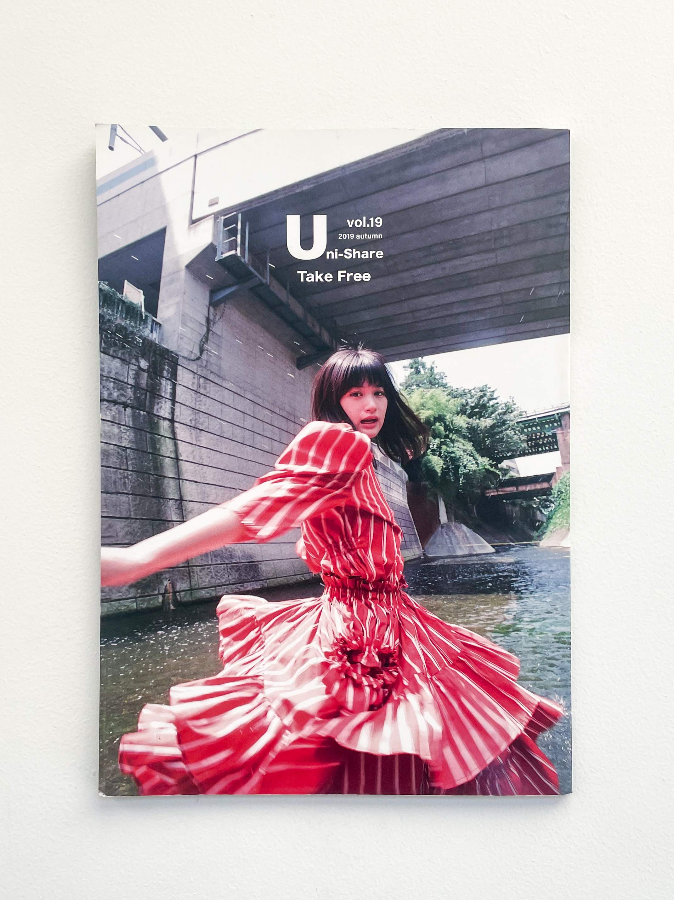

Namika Hamahashi
—
Social Science / Writing
,
Senses
,
Connecting Dots
Uni-Share Vol.19
Editorials | Collective Work
2019, Tokyo
Uni-Share is a student-led community dedicated to curating ad-free magazines, displayed in various bookstores throughout Tokyo. For Uni-Share Vol. 19, we featured artists such as Kotoha Yokozawa, Nagaho Yamamoto, Dan Isomura, Ken Kagami, Mappy, and the fashion label HOUGA.
What did I do?
I co-led the project "The Initial Impulse," particularly focusing on concept development, location selection, communication and interview with the featured artist, assistance during the shoot, as well as in proofreading and layout design for the magazine.
Model: Mahiru Koda
Photography: Kisshomaru Shimamura
Hair & Makeup: TORI
